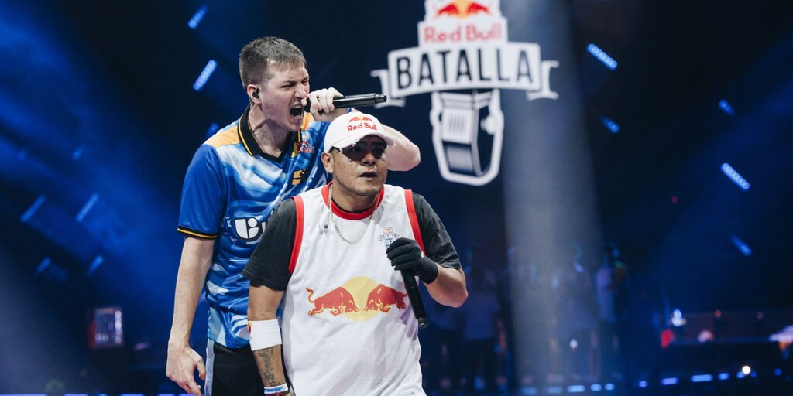

Freestyle rap is an improvisational form of rap where the artist creates lyrics on the spot, often battling other rappers in real time. Unlike traditional songwriting, freestyle focuses on spontaneity, quick thinking, and wordplay, with the rapper delivering bars without pre-written material. The skill lies in the ability to flow, rhyme, and come up with clever, relevant lines in response to a beat or the opponent’s lines.
Competitions in freestyle rap, such as the popular "Red Bull Batalla" or "Freestyle Master Series," bring together the best improvisational rappers to battle it out in front of an audience and judges. These events often involve face-to-face battles where two rappers exchange verses, each trying to outperform the other with clever insults, wordplay, and punchlines. The crowd plays a crucial role in determining the winner, and these competitions have grown in popularity, gaining attention on social media and live broadcasts. The beauty of freestyle rap lies in its creativity and the rapper’s ability to adapt and stay sharp, showcasing their true talent in the heat of the moment.